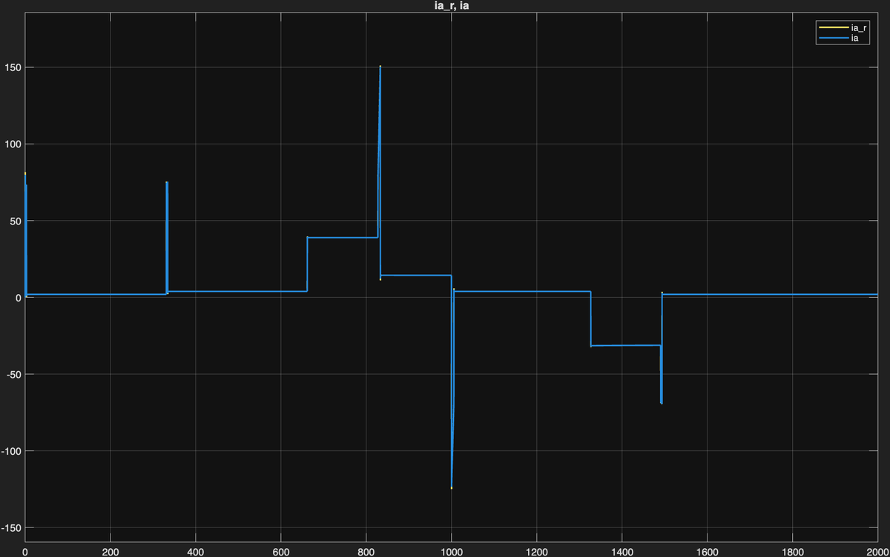
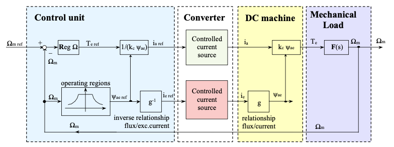
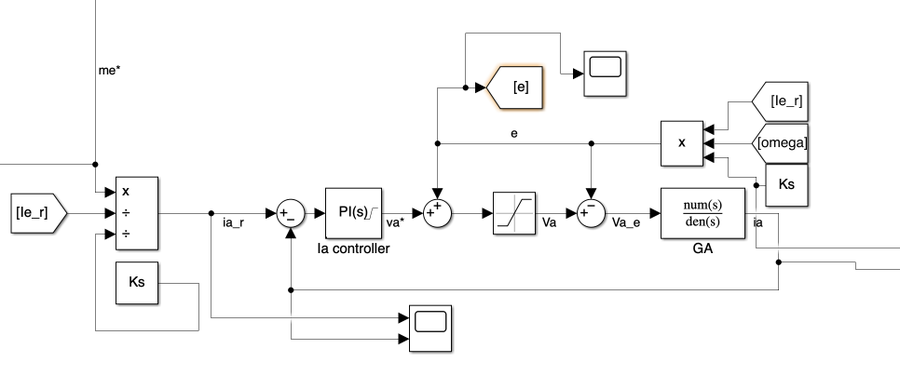
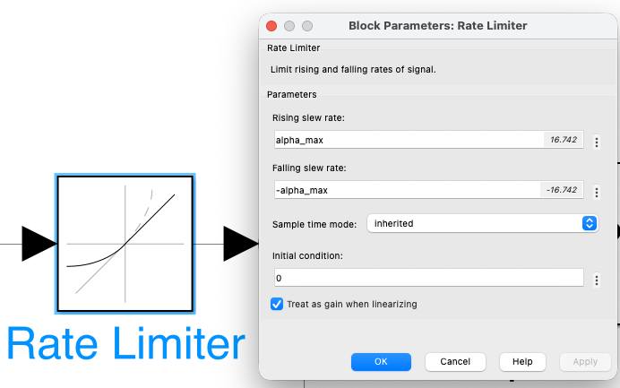

01 Simulation Overview
Additional features: back-EMF feedforward decoupling (cancels coupling between electrical/mechanical dynamics), anti-windup back-calculation (prevents integrator windup during saturation), rate limiter on speed reference (limits jerk to 1.0 m/s² for passenger comfort), dynamic field-weakening above base speed (Ie,ref = En / (Ks·ω)).
02 Vehicle Speed — v(t)
✓ No overshoot Field weakening km 4–6
Speed profile confirms correct tracking of kinematic reference across all seven route segments. Rate limiter on ωref produces smooth linear ramps at each acceleration/deceleration phase, limiting jerk to 1.0 m/s².
PI speed loop, tuned with pole-zero cancellation, PM = 90° → reaches each reference step without overshoot. Validates bandwidth separation strategy (ωm = 2 rad/s).
Integral action of PI eliminates steady-state tracking error at constant speed, including in presence of slope disturbances (±5% at km 3–4 and 8–9).
At vmax ≈ 11.67 m/s motor operates above base speed. Speed tracking remains accurate despite excitation current dynamically reduced below nominal.
At km 3 (uphill +5%) and km 8 (downhill −5%), integral action fully rejects torque disturbance. No visible deviation from speed reference observed.
03 Armature Current — ia(t)
Clamped at 156 A Anti-windup ✓
Armature current confirms inner PI loop correctly limits Ia to rated value 156 A during all acceleration phases. Back-calculation anti-windup (Kb,a = 100) prevents current spikes at transitions from saturation to unsaturated operation.
During acceleration ramps speed PI demands max torque. Saturation block clamps Ia at +156 A — max traction while protecting motor windings from thermal overload.
Back-calculation (Kb,a = 100) prevents integrator windup. Transitions saturated → unsaturated: smooth — no current spikes that would trip electrical protection.
At constant speed torque need only overcome viscous friction (β = 0.81 Nms) and slope disturbance. Ia settles to low value → efficient operation outside ramp phases.
During deceleration km 9–10 armature current reverses → regenerative braking. Negative Ia confirms motor acts as generator, feeding energy back to DC line.
04 Excitation Current — ie(t)
Field weakening active Ie,min ≈ 2.6 A ✓
Excitation current plot validates field-weakening strategy. Current holds at nominal 5 A until base speed reached. Beyond this point controller dynamically reduces excitation via 1/ω law — keeps back-EMF below 600 V DC supply.
In base-speed region Ie held at nominal 5 A. Excitation PI (ωe = 40 rad/s, PM = 90°) tracks constant reference without error.
As ω exceeds ωbase = 101.6 rad/s: Ie,ref = En/(Ks·ω). At vmax reference drops to ≈ 2.6 A — tracked accurately, no oscillation.
Transitions into/out of field-weakening region smooth — no underdamped oscillations. Validates 90° phase margin design for excitation loop.
When speed ref drops below ωbase at km 6, FW block restores Ie,ref = 5 A. Excitation PI tracks step without overshoot.
05 Key Control Diagrams
Simulink diagrams illustrate main control subsystems. Cascade architecture decouples three loops via bandwidth separation (factor ≥ 10× between adjacent loops).





06 Conclusions
Cascade PI architecture proves capable of controlling Carelli 1928 tram drive across full operating envelope — rated-speed traction, above-rated field-weakening, slope disturbances — while respecting every electrical and mechanical constraint.
Three design decisions proved essential: interpreting Kt as total machine constant Ks (verified by dual KVL/power-balance check), strict bandwidth separation (40/20/2 rad/s) for independent loop stability, back-calculation anti-windup to prevent integrator saturation during frequent current-limiting events typical of urban traction cycles.
Project submitted for course Dynamics of Electrical Machines and Drives (10 CFU) — MSc Automation and Control Engineering, Politecnico di Milano, under supervision of Prof. Francesco Castelli Dezza.